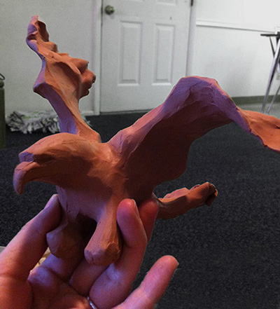
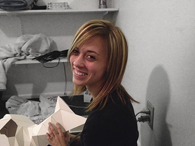
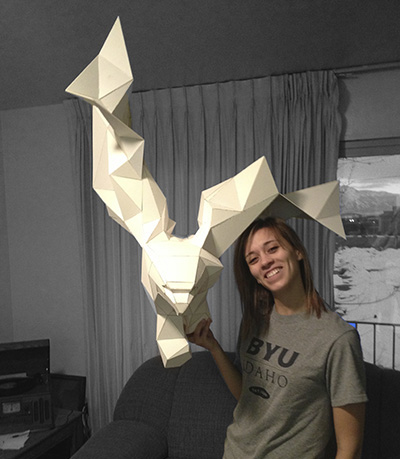
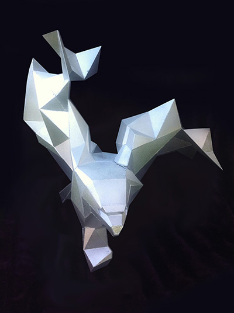
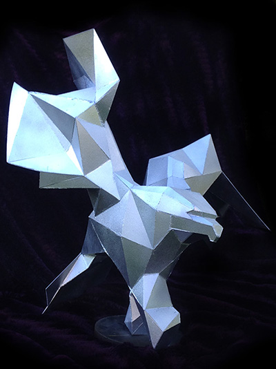
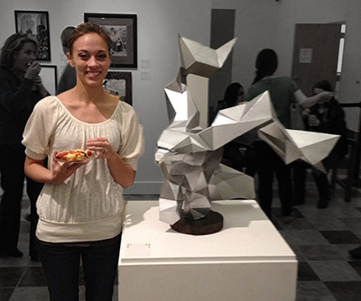

Throughout my life I have had the opportunity to study and experiment in many different artistic mediums. In doing so I have been able to find my passion in sculpture. I love the puzzles and problems I encounter while trying to figure out how to make something work in three dimensions. I love using different materials to build and create, and I love exploring the limits created by the physical boundaries of those materials.
 I was first introduced to sculpture in my sophomore year of high school when I tool a beginning ceramics class. I was amazed at how theraputic working with clay was to me and I was able to explore many techniques in working with clay and pottery. Since then I have been able to continue exploring many different mediums including wire, paper and stone.
   